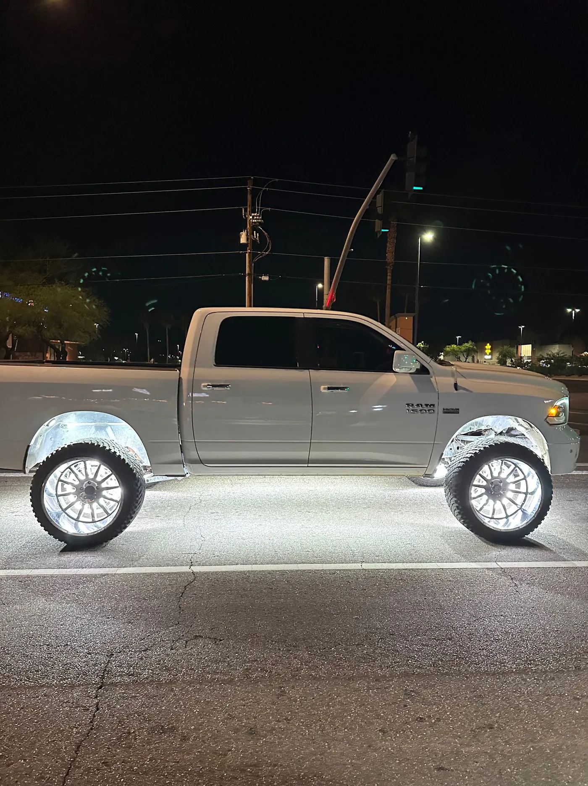
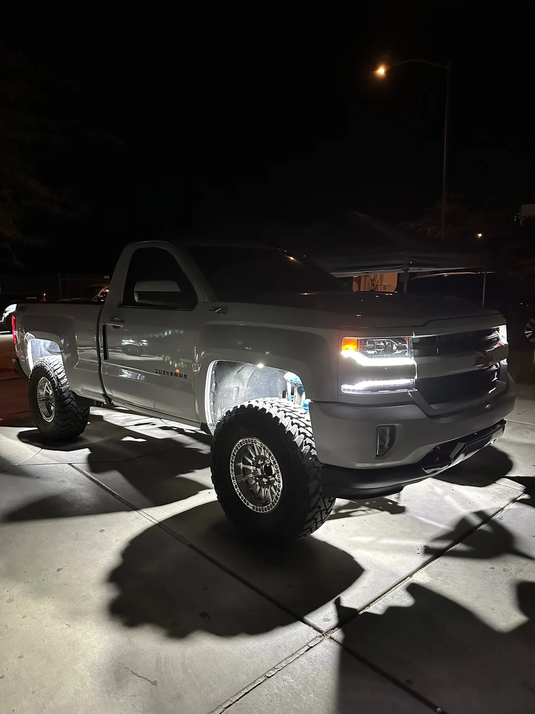
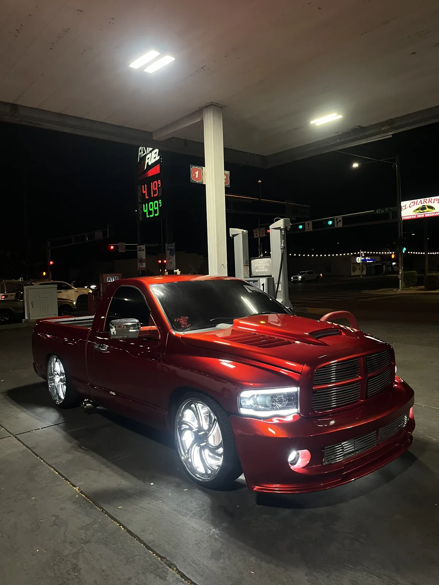

Plug And Play
5-Row Pure White Wheel Lights
- 17″ Rings
- 5 Row
- Bluetooth App
$380 17″ kit
Wheel Lights · Mesa, AZ
Our wheel lights are 17-inch LED rings that mount behind each wheel and light it from the inside. They come in 5-row and 10-row pure white, plug and play with an app, and we install them in Mesa.
5.0★ from 33 reviews · installed in Mesa · kits ship anywhere

A wheel light is an LED ring that mounts behind the wheel, around the brake. When it's on, the light comes through the spokes, so the whole wheel glows from the inside out.
Each kit lights all four wheels from one module. You control them with the remote or the Bluetooth app, and the kits are waterproof, which matters on a part that sits right behind the tire.
Both are 17-inch pure white rings with the same plug and play setup. The difference is how many rows of LEDs, and which way they face.
| 5-Row | 10-Row | |
|---|---|---|
| Rows of LEDs | 5 | 10: five facing in, five facing out |
| Light direction | One direction | Both directions |
| Ring size | 17 inches | 17 inches |
| Control | Module, remote, Bluetooth app | Module, remote, Bluetooth app |
| Price | $380 | $500 |
The 10-row lights from both sides of the ring, which makes it the brighter look through open spokes.
$380 17″ kit

$500 17″ kit
The ring sits behind the wheel, around the brake, so fit comes down to the space back there more than the size of your rims. The brake, the caliper and the dust shield are what decide it.
Tell us your year, make and model when you book, and we'll check fit at drop-off before anything gets installed.
Wheel lights light the wheel. Rock lights light the ground. Run both and the tire and the pavement around it light up together, which is the look in most of our builds. A common pairing is wheel lights with two rock lights per wheel well. See rock lights for those.


Our wheel lights are pure white, and white is allowed facing any direction in Arizona. The rules to watch are red or blue visible from the front and flashing modes while driving, which A.R.S. 28-947 restricts. Full summary on our underglow page.
A wheel light install means mounting a ring behind each wheel, then running wire from each corner back to the module without letting it touch the brakes or catch on the suspension as it moves and the wheels turn. It's careful work at four corners.
The kits are plug and play, so a confident DIYer can do it. If you'd rather not pull the wheels yourself, book the install. Chino's truck got 5-row wheel lights at our shop.
Every light we put on a vehicle gets the same four things. None of them are extras, and none of them depend on who's working that day.
The 10-row has five rows facing in and five facing out, so it lights the wheel from both directions. The 5-row is a single direction. Both are 17-inch pure white rings with the same app control.
Our 5-row kit is $380 and the 10-row kit is $500, for all four wheels. Install labor is quoted before we start.
Fit depends on the space behind your wheel, around the brake and dust shield. Tell us your vehicle when you book and we check it at drop-off.
White wheel lights are fine. Arizona restricts red or blue visible from the front and flashing lights while driving.
Yes, both the 5-row and 10-row kits are waterproof, which matters on a part that sits right behind the tire.
Yes. The kits are plug and play with a module, remote and app. Or book the install and we handle all four corners.
Installs In Mesa
Bring our kit or your own lights. We text you to confirm your drop-off and quote.